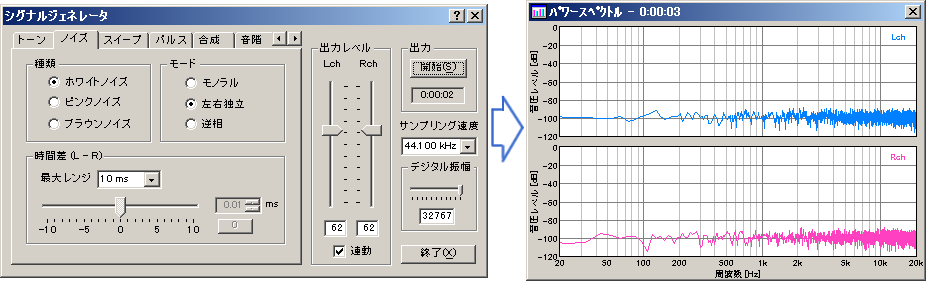
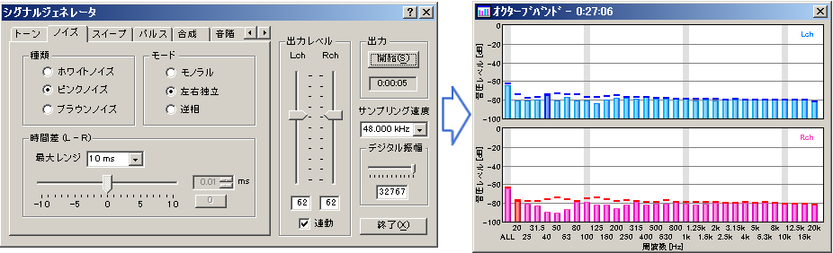

DSSF3 > RA > 操作マニュアル > 基本的な測定方法
シグナルジェネレータとFFTアナライザによる測定
（トーン）
シグナルジェネレーターは正弦波、三角波、方形波、のこぎり波を任意の周波数で信号出力したり、周波数を任意に変化さた信号を出力できます。それらの信号を耳で聞いて診断したり、測定対象にそれらの信号を入力し、測定対象によって変化した出力を測定入力し、ＲＡのＦＦＴアナライザを使用してスペクトラム表示させます。信号の周波数が正しく出力されているか、余分な周波数の信号が測定されていないか目視、確認します。
これは非常に重要な測定です。回路や、音響システムが正常に動作してるかどうかが確認できます。故障や異常の診断はもちろん、特殊な状況での性能の劣化や問題発生など、通常ではわかりにくい異常などにも、増幅回路の性能、音響システムの歪、発振や、異音、ノイズの発生、がりの発生、暴走などいろいろの異常が繰り返し再現でき、問題の解決が容易です。これらの確認は、音響システムの保守、チェックに有効です。また複雑な音響システムも常にチェックすることで大きなトラブルを未然に防ぎ万全の状態で安心して使用することができます。
リアルタイム相互相関表示を使用すれば、指定周波数の２ＣＨの右の信号が左の信号に較べて何ミリ秒遅れるかの遅れ時間が測定できます。これをスライドバーで変化させることにより、遅れ時間の周波数特性の動特性を目視確認できます。
（ノイズ）
ホワイトノイズ（どの周波数の音も同じ強さで、ランダムに同時出力されます）をパソコンのＷＡＶＥ出力等の内部出力やラインアウト信号などで外部出力し、スペクトルアナライザで測定しています。ホワイトノイズをスペクトラムアナライザで測定した場合、周波数特性がフラットならこのようにフラットにスペクトラム表示されます。

ピンクノイズ（オクターブバンドごとに同じ強さの音が、ランダムに出力されます）をパソコンのＷＡＶＥ出力等の内部出力やラインアウト信号などで外部出力したり、またはスピーカー再生したものをマイク測定した場合、周波数特性がフラットならオクターブバンド表示がフラットになります。
ピンクノイズは、ホワイトノイズにピンクノイズフイルターを使用して作られます。ホワイトノイズは高域のエネルギーを低域と同じ強さに出力するため、スピーカーに危険です。そのためピンクノイズが使用されます。

（スイープ）
開始周波数から終了周波数まで、一定の割合で周波数を変化させた信号を出力します。スイープ信号をパソコンのＷＡＶＥ出力等の内部出力やラインアウト信号などで外部出力したり、またはスピーカー再生したものをマイク入力から1/3オクターブバンド表示することにより、電子回路やスピーカー再生などの音響システムの周波数特性のダイナミックな応答が目視、確認できます。特にスピーカーなどのクロスオーバーネットワークなどを含む動特性は、この測定に慣れてくると、スピーカーの応答をまず耳に聞くことによっても非常に多くの情報を暗示してくれます。またスピーカーの周波数特性などの動特性は、測定入力の３次元表示（FFTアナライザの時間-周波数-エネルギーの3次元表示）を使用して目視確認したり、クロスオーバーネットワークのテストには、その周波数部分を繰り返し精密に動特性のヒアリングと精密なスペクトラム表示の目視確認を併用します。リアルタイム相互相関表示を使用すれば、スイープ信号を使用した指定周波数の動特性の２ＣＨの精密な遅れ時間が測定できます。
（多機能騒音計）
スペクトラムアナライザや、オクターブアナライザなどのＦＦＴアナライザには、サンプリング周波数、ＦＦＴサイズ、時間窓の切り替え、ピークホールド機能や平滑化機能（ＳＬＯＷ１秒、ＦＡＳＴ １２５ｍ秒の時定数の切り替え）やＡ特性、Ｂ特性、Ｃ特性、ＦＬＡＴの切り替え、マイク校正機能が標準装備されています。
たとえばオクターブ分析器を使用した場合、ピークホールド機能や平滑化機能（ＳＬＯＷ１秒、ＦＡＳＴ １２５ｍ秒の時定数の切り替え）を、通常ピークホールドなし、ＦＡＳＴに指定し、Ａ特性を指定、それにマイク補正機能を利用（感度、周波数補正機能）して入力レベルを校正しておけば、その設定を読み出すだけで、1/3オクターブバンド、およびオクターブバンド付の高機能騒音計として使用することもできます。
DSSF3 > RA > 操作マニュアル > 基本的な測定方法